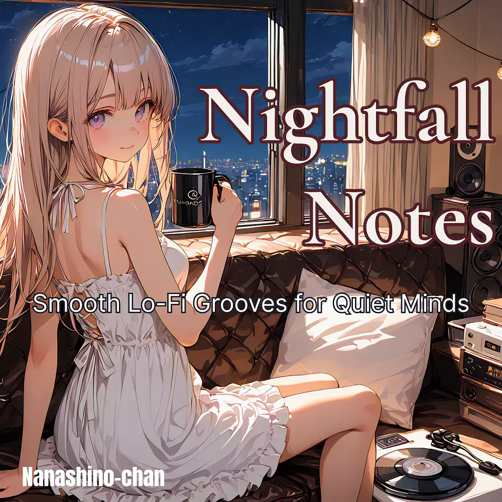

Lo-Fi · Jazz
Calm Lo-Fi Jazz for Focus & Unwind – Trusted by Top Creators
Nanashino-chan
Explore Calm Lo-Fi Jazz for Focus & Unwind – Trusted by Top Creators by Nanashino-chan: 26 instrumental tracks spanning Lo-Fi / Jazz. Start with Morning Steam / Gentle Drizzle, preview the collection and find your favorites on streaming services.
2025-08-08 · Released · 26 tracks · Instrumental
Preview the album
The jacket stays here until you choose a track. Playback uses YouTube.
YOUTUBE PREVIEW
Choose a track to listen
The jacket stays here until you choose a track. Playback uses YouTube.
If playback is unavailable, open the album or track on the streaming service.
Find this album on streaming services
Links marked “search” open search results. Select the album or track on the service.
Track list 26
- 01Morning Steam
- 02Gentle Drizzle
- 03Cozy Counter
- 04Sugar & Silence
- 05Window Glow
- 06Cinnamon Thoughts
- 07Jazz in the Air
- 08Creamy Clouds
- 09Sunday Light
- 10Quiet Sips
- 11Caramel Flow
- 12Unwritten Pages
- 13Afternoon Fade
- 14Lazy Brew
- 15Between the Notes
- 16Biscuit Daydream
- 17Drowsy Tempo
- 18Golden Steam
- 19Rooftop Roast
- 20Mellow Moments
- 21Lo-Fi Whispers
- 22Cocoa Stillness
- 23Sketches in Foam
- 24Faded Mug
- 25Last Drop
- 26Thanks for Brewing
Find a sound for your next post
Copy “Nanashino-chan + track title” and paste it into your social app’s music search. Availability depends on your region and account. Copying the name does not grant usage rights.